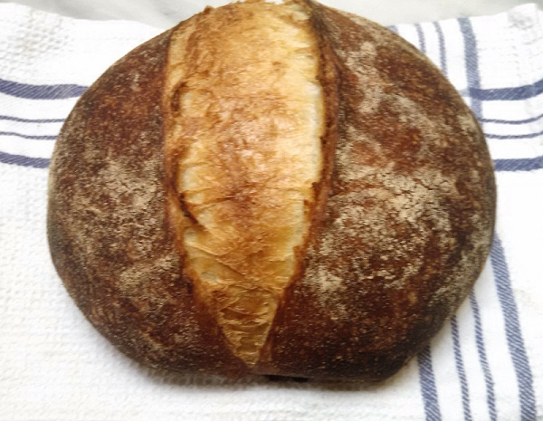

I started programming in 2012, learning first Python before moving to Scheme. Since then I've learned a variety of functional languages, including other Lisps such as Common Lisp and Clojure, and statically typed languages like Haskell.
In my free time I enjoy playing jazz. In addition to playing piano and drums, I like studying music theory.
Here's a picture of some bread I made: 